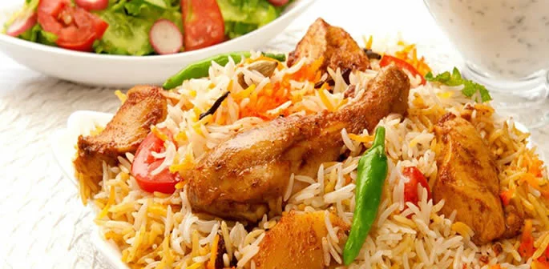

BIRYANI RECIPE

DESCRIPTION
Simply put, biryani is a spiced mix of meat and rice, traditionally cooked over an open fire in a leather pot. It is combined in different ways with a variety of components to create a number of highly tasty and unique flavor combinations. The word “biryani” itself comes from the word “birian,” a Persian term which translates to “fried before cooking.” Indeed, the roots of this dish have been traced by notable historians to modern day Persia, with appearances in notes under various names as early as 2 CE. The biryani recipe was then much simplified in order to keep it viable during travel.
Once the dish reached India, it blossomed into something entirely new. The story goes that Mumtaz Mahal, a Queen of Shah Jahan, visited an army barrack and found the soldiers there to be heavily undernourished. She demanded the barrack’s cook provide the soldiers with a dish that was nutritious and had all the meat, rice, and spices needed to restore their energy. According to legend, this is how the dish first came to India. As various regions across Southern Asia adopted the recipe, it grew and changed to express cultures’ values; leading to the diverse selection of biryani dishes that exist today.
INGREDIENTS
- 350g of basmati rice, washed, soaked for 30 minutes
- 5 tbsp of vegetable oil
- 1/2 tbsp of ghee
- 1 cinnamon stick
- 2 star anise
- 1 tsp black cumin
- 10 cloves
- 1 tsp coriander seeds
- 2 black cardamom pods
- 5 green cardamom pods
- 8 cloves
- 1 bay leaf
- mace, 1 small piece
- 2 red onions, finely chopped
- 1 tsp ginger, grated
- 1 tsp garlic, crushed
- 4 tomatoes, roughly chopped
- 1 tsp turmeric
- 1/2 tsp red chilli powder
- 400g of braising beef, or beef chuck pieces
- 200g of Greek yoghurt
- 1/2 tsp saffron, steeped in 2 tbsp boiling water for 15 minutes
- 10 mint leaves
- 1/2 lemon, sliced
- 2 tsp rose water, or kewra essence
- 1/2 tbsp of ghee, melted
- 2 green chillies
- 1 tbsp of pistachio nut
- 2 edible rose buds, or 1 tbsp edible dried rose petals
COOKING STEPS
- Begin by par-boiling the soaked rice - it should be firm but not entirely raw. Drain and set aside
- Place a heavy-based saucepan over a medium-low heat and add the oil and ghee. When hot, add all the whole spices and cook for 30 seconds, or until you can smell the oil being aromatized by the spices
- Increase to a medium heat, add the red onions and fry until light golden. Add the ginger and garlic and cook for 30 seconds, until the garlic no longer smells raw
- Add the tomatoes and cook until the moisture has evaporated (add about 1-2 tbsp for water if the tomatoes start to burn). The result should be a thick, rich sauce with no hard tomato bits, and the oil should rise to the surface of the sauce. Add the turmeric and red chilli powder
- Add the beef and stir-fry until sealed, for about 2-3 minutes. Add the Greek yoghurt and continue to stir-fry until the moisture of the yoghurt evaporates and you are left with a sauce consistency. Cover the pan and turn the heat to low
- Allow to cook until the sauce is thick and reddish-brown, and the oil rises to the top; this will take around 15-20 minutes of cooking. After this time if the meat isn’t cook through, you may need to add a little water and cook covered for a few more minutes until the sauce is thick again
- Once the meat is cooked through, layer the rice evenly on top of the meat. Poke the lemon, mint and green chilli into the rice, pour over the saffron and rose water or kewra and then using a piece of foil, cover the entire surface of the saucepan and place the lid firmly over to create a seal, so the steam does not escape the pan
- Turn the heat to it’s lowest setting and steam cook for 10 minutes. Once done, remove the foil and let the steam escape
- Mix the rice, meat and sauce gently using a dessert spoon so as to not break the rice. Serve hot in a serving dish and scatter over the pistachios and rose petals or buds
SOURCES OF CONTENT